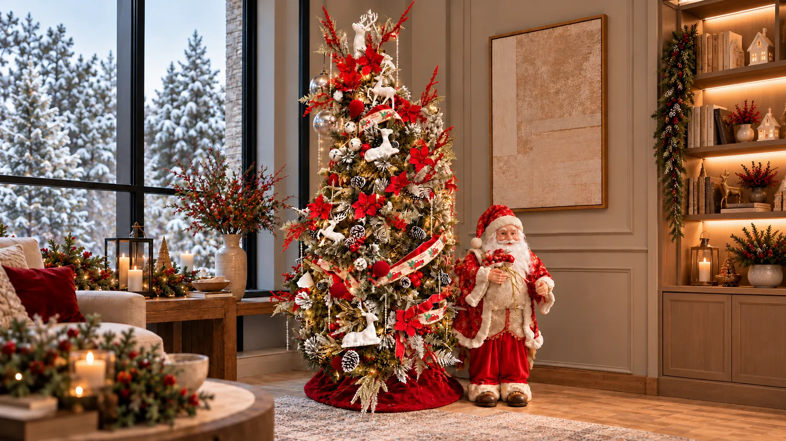
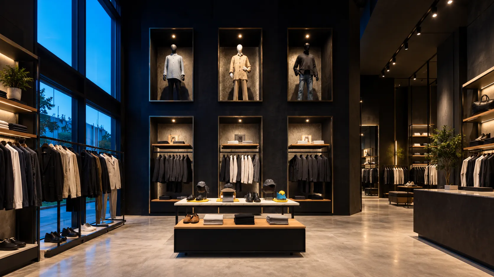
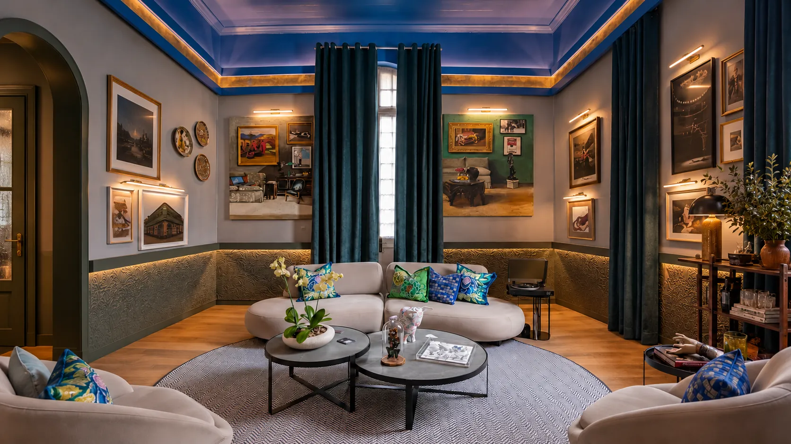
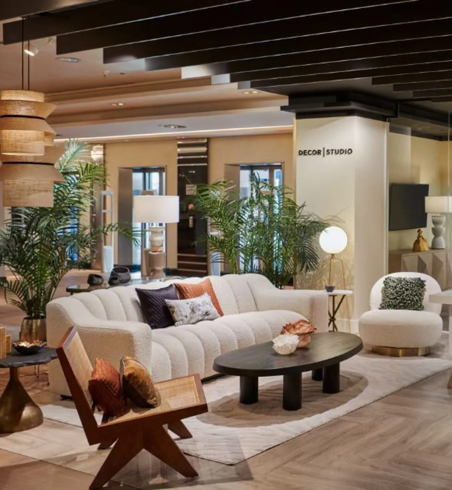
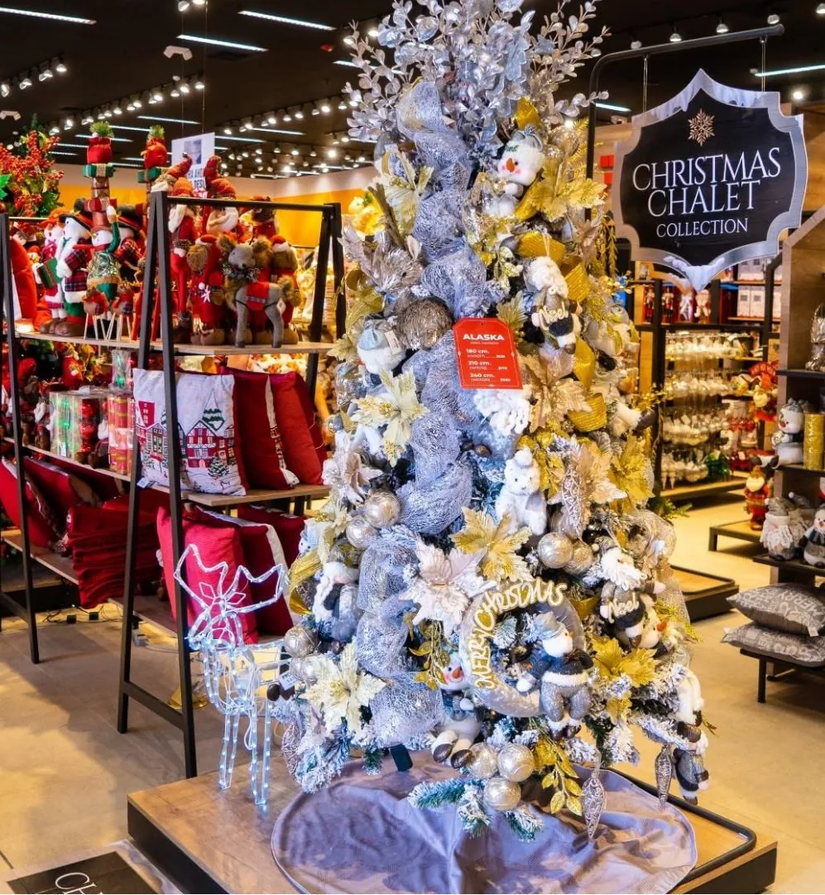
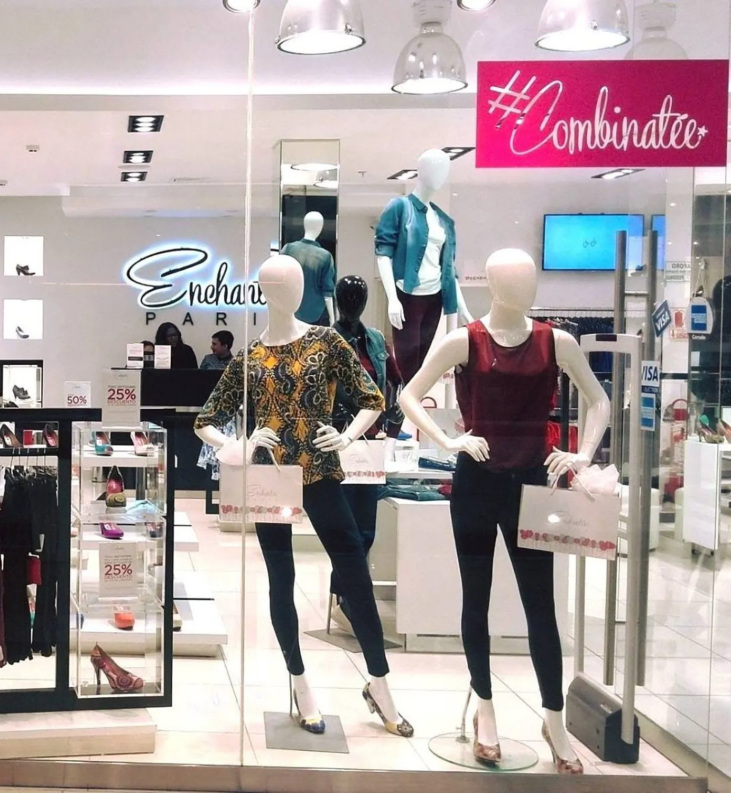

Espacios que saben vender: interiores y visual merchandising para marcas retail en Lima.
Agendar visita técnica


01 / 03
Proyectos

El Corte InglésRetail departamental
Pycca EcuadorCampaña estacional
Enchantée ParisModa · vitrinismoMétodo
Cada proyecto se dibuja en acuarela antes de levantarse. Lo que se aprueba en papel es lo que se monta en obra.
Ver un proceso completo
 Boceto
Obra
Boceto
Obra
Zona de tienda integrada a un espacio de arte: mobiliario bajo para no tapar la pared de fondo y luz cálida dirigida a la exhibición.
Catálogo

Autoría
Toda propuesta llega con la razón detrás: por qué esa altura de mueble, ese recorrido, ese punto de luz.
«Resuelvo el espacio primero. El diseño llega después.»
Cuéntenos qué local es y en qué fecha necesita reabrir.
Giandeco Studio Design es un estudio de diseño de interiores y visual merchandising en Lima, Perú, especializado en proyectos retail para marcas como El Corte Inglés, Pycca, Walon y Enchantée Paris. Además del diseño comercial, desarrolla interiorismo residencial (Hogar) y una línea propia de mobiliario y decoración (Catálogo). Bajo la dirección de Gian Jiménez, el estudio diseña y, cuando el proyecto lo requiere, ejecuta el proyecto completo: layout comercial, mobiliario a medida, iluminación y visual merchandising, con presencia en ferias como Expodeco y Casacor.